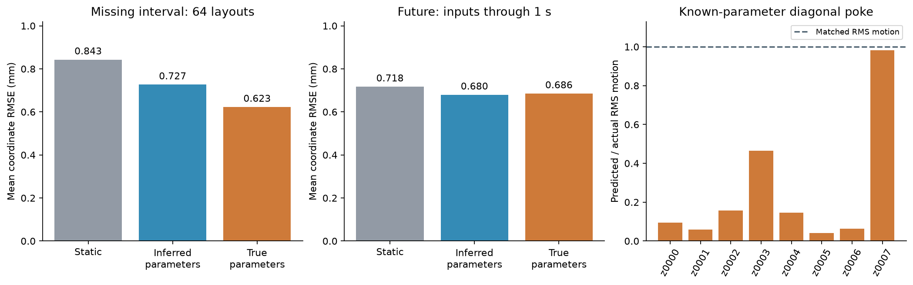
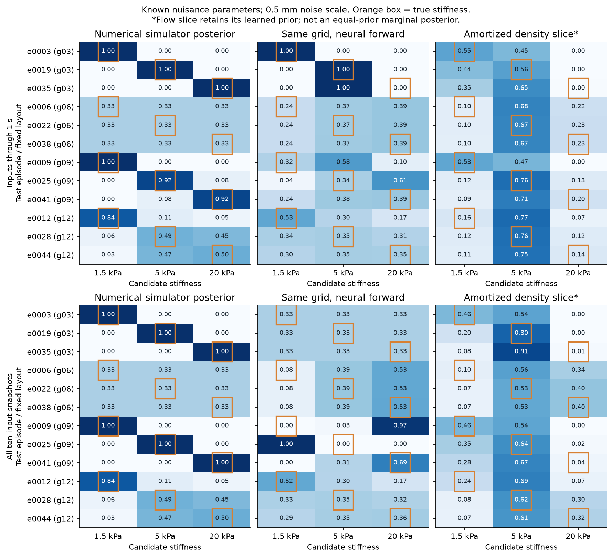
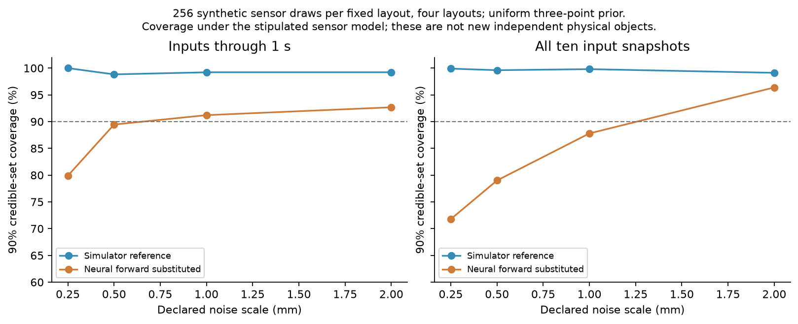

Controlled diagnosis of the existing frozen models. No architecture, checkpoint or action policy was fitted or selected. The original sealed report remains unchanged. This is explanatory reuse of already opened TEST data, not a new confirmatory benchmark.
Giving it the true material, holding points and forces helps fill missing motion, but does not make the response accurate. A small numerical simulator reference separates one clearly distinguishable case from another that remains ambiguous. We have not isolated the full inverse-model error or established calibrated active probing.
We supplied all true physical coefficients to the frozen forward predictor: material properties, support and load locations, support/load categories, force vectors and prescribed support motion. All 64 fresh layouts and all 12 secondary test episodes were evaluated. The table shows the fresh layouts. “True parameters” is a privileged diagnostic, not a deployable image predictor.
| Task / 64 layouts | Static | Inferred RGB-D | True parameters |
|---|---|---|---|
| missing interval | 0.843 mm | 0.727 mm | 0.623 mm |
| future | 0.718 mm | 0.680 mm | 0.686 mm |
The missing-interval improvement from inferred to true parameters is 14.3%, with a paired 64-layout bootstrap interval of 4.8–22.2%. However, the true-parameter future error is essentially the same as the inferred forecast. A true-parameter query is not a lower bound on a biased surrogate: wrong parameters can compensate for wrong mechanics. Forward and inverse errors cannot be subtracted as independent error components.

All four candidate pokes and the independent diagonal evaluation control were checked on each of eight test objects (40 saved responses). The original supports, moving-support targets and both hardware handles were retained. Every old unknown force was replaced with the declared known command. These oracle queries never modify the encoder or its saved posterior.
| Independent diagonal response / 8 objects | Mean coordinate error |
|---|---|
| static mm | 0.667 mm |
| passive inference mm | 0.681 mm |
| after risk poke mm | 0.623 mm |
| true parameters controlled forward mm | 0.559 mm |
| true parameters original forward mm | 0.521 mm |
The controlled teacher has higher true-parameter error than the original passive forward model on all five control families on average. This is a diagnostic comparison of frozen checkpoints, not selection of a replacement model. Its independent diagonal response remains substantially wrong even with the exact physical answer supplied.
| Object | Support | Actual RMS motion | Predicted RMS motion | Amplitude ratio |
|---|---|---|---|---|
| z0000 | point_pin | 0.416 mm | 0.040 mm | 0.095 |
| z0001 | fixed_patch | 0.069 mm | 0.004 mm | 0.060 |
| z0002 | two_patches | 0.066 mm | 0.010 mm | 0.156 |
| z0003 | moving_patch | 2.988 mm | 1.386 mm | 0.464 |
| z0004 | point_pin | 0.060 mm | 0.009 mm | 0.146 |
| z0005 | fixed_patch | 0.637 mm | 0.026 mm | 0.041 |
| z0006 | two_patches | 0.118 mm | 0.007 mm | 0.063 |
| z0007 | moving_patch | 0.979 mm | 0.962 mm | 0.982 |
For six of eight diagonal responses, the controlled teacher produces less than 16% of the actual RMS motion. The two moving-support objects have larger responses; their directions and time courses can still be wrong. RMS amplitude is descriptive and does not measure phase, direction or maximum displacement.
Four earlier held-out layouts each have exact Isaac recordings at 1.5, 5 and 20 kPa. All other material properties, supports, forces, hardware and camera paths are identical within each triple and checked before comparison. We supplied those nuisance values and put equal prior mass on the three stiffnesses. The reference posterior is an exact normalized finite sum over these three simulated possibilities.
The sensor uses 12 pixels chosen from known rest geometry at each observed timestamp. There is independent, frame-shared and sequence-shared range noise, plus explicit visibility errors and an outlier branch. All four noise scales were specified before running this diagnosis; none was fitted to TEST. Prefix and full-context results are separate. Predictions from the neural model are ray-cast at exactly the same pixels, and use the same prior and likelihood as the simulator bank.

Genuine ambiguity: in g06, the largest recorded depth difference between stiffness candidates at the selected input pixels is only 0.0102 mm. With a 0.5 mm noise scale the numerical posterior remains about one-third for each stiffness, even with all snapshots. In g12, 5 and 20 kPa also remain difficult to distinguish.
Forward-model error: in g03 the simulator reference cleanly separates the three stiffnesses. With inputs through 1 s, for the true 20 kPa case, replacing the simulator with the neural forward model instead favours 5 kPa. This comparison holds the prior, candidate set, nuisance parameters, observations and likelihood fixed; only the forward response changes.
Amortized inference: the third panel evaluates the learned 25D density at the same true-nuisance hypotheses and normalizes those scores with equal log-coordinate cell widths. Its learned prior and nuisance conditioning differ from the uniform-grid problem; it is a density slice, not a full marginal or an equal-prior Bayes reference. Its disagreements are useful warnings, but cannot alone quantify pure inference error. A full numerical posterior with matching prior and marginalized nuisance variables remains uncomputed.
The noiseless simulator-bank self-match is an upper bound, not evidence of universal identification. We therefore generated 256 noisy observations per layout from the declared simulator-template sensor model with a uniform stiffness prior, then inferred with either the simulator templates or the neural responses. These repeated sensor draws concern four fixed layouts; they are not thousands of independent objects. Discrete 90% credible sets can contain more than 90% mass, explaining conservative reference coverage.
| Inputs | Noise scale | True probability: simulator / neural | Synthetic 90% coverage: simulator / neural |
|---|---|---|---|
| prefix | 0.25 mm | 0.762 / 0.388 | 100.0% / 79.9% |
| prefix | 0.5 mm | 0.722 / 0.440 | 98.8% / 89.5% |
| prefix | 1.0 mm | 0.630 / 0.426 | 99.2% / 91.2% |
| prefix | 2.0 mm | 0.561 / 0.415 | 99.2% / 92.7% |
| full | 0.25 mm | 0.762 / 0.389 | 99.9% / 71.8% |
| full | 0.5 mm | 0.736 / 0.327 | 99.6% / 79.0% |
| full | 1.0 mm | 0.689 / 0.477 | 99.8% / 87.8% |
| full | 2.0 mm | 0.668 / 0.491 | 99.1% / 96.4% |

At 0.5 mm and full context, synthetic credible-set coverage drops from 99.6% with simulator templates to 79.0% when neural responses are substituted. This is a controlled demonstration of forward misspecification causing bad uncertainty, not a new physical coverage guarantee. The conclusion depends on noise scale; the full sweep is shown rather than selecting the most favourable setting.
First establish accurate known-force responses, including amplitude, phase, direction, support motion and stiffness sensitivity on reserved layouts. Check control finetuning against the original model rather than assuming it helps. Then use a matching-prior numerical posterior with nuisance integration to measure amortization error. Only after predictive uncertainty passes reserved calibration checks should it choose views or pokes. This diagnosis does not solve any of those steps.
All oracle case results, paired bootstrap comparisons and input hashes · All grid posteriors, synthetic checks and input hashes · Summary · Evidence manifest · Six numerical checks · 20 targeted checks including the six new tests
OPENBLAS_NUM_THREADS=2 .venv/bin/python experiments/diagnose_gaussian_forward.py --output runs/new-oracle --device cuda:0 OPENBLAS_NUM_THREADS=2 .venv/bin/python experiments/diagnose_gaussian_reference.py --output runs/new-reference --device cuda:1 OPENBLAS_NUM_THREADS=2 .venv/bin/python experiments/report_gaussian_diagnosis.py --oracle runs/new-oracle/results.json --reference runs/new-reference/results.json --output reports/new-diagnosis OPENBLAS_NUM_THREADS=2 .venv/bin/python -m unittest discover -s tests -p test_gaussian_diagnosis.py
The existing artifact index supplies the frozen models, original simulations and sensor data. Only CPU/GPU evaluation was run for this diagnosis; no new Isaac simulations were needed. Bird remains stopped.